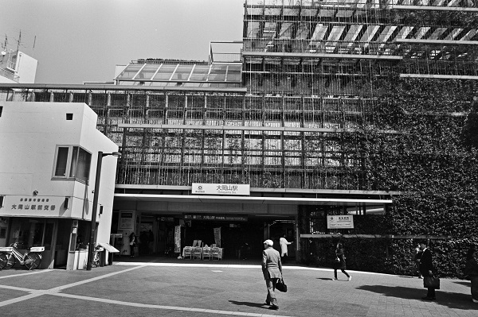
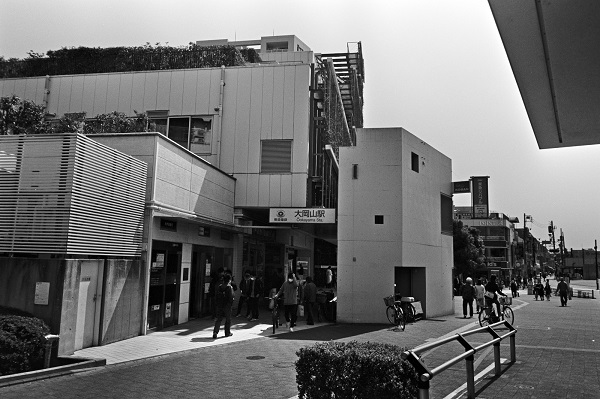
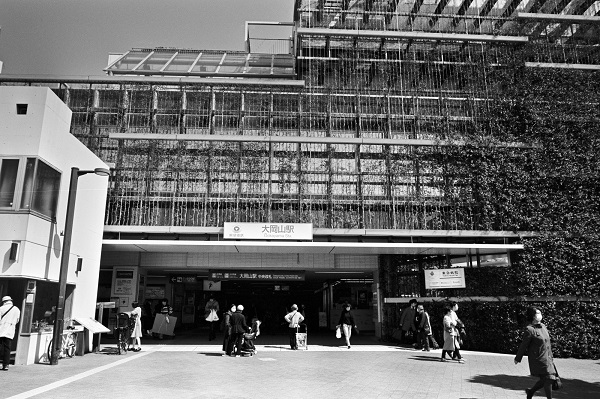
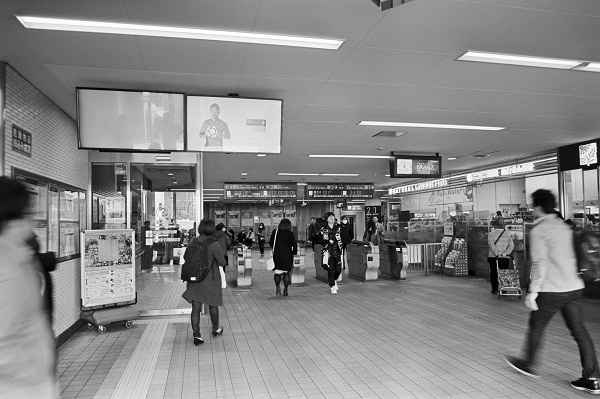
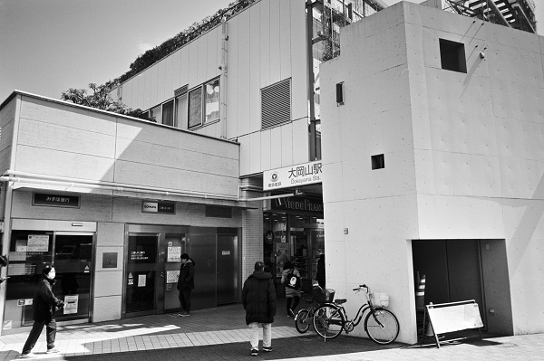

MG06_東急目黒線 OM東急大井町線
MG_大岡山駅 Ookayama
洗足駅←← 東急目黒線 →→奥沢駅
北千束駅←← 東急大井町線 →→緑ヶ丘駅

2019/3/27 ﾍｷｻｰRF ｶﾗｰｽｺﾊﾟｰ25mm Acros

2019/3/27 ﾍｷｻｰRF ｶﾗｰｽｺﾊﾟｰ25mm Acros

2019/3/14 ﾍｷｻｰRF ｶﾗｰｽｺﾊﾟｰ25mm Acros

2019/3/14 ﾍｷｻｰRF ｶﾗｰｽｺﾊﾟｰ25mm Acros

2019/3/14 ﾍｷｻｰRF ｶﾗｰｽｺﾊﾟｰ25mm Acros
戻る ﾎｰﾑ